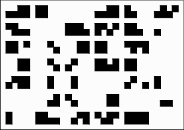

Church Cipher
unknown
<
| cipher |
>
| This article is a stub. You can help out by
expanding
it |
+ The church cipher is a cipher seemingly related to the funn

above: a text using the cip
attempts ha
connection to the church of
have proved that it is inde